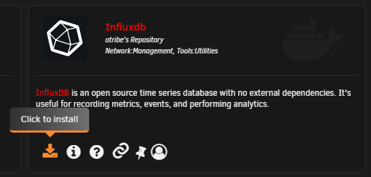
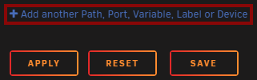

Install Ultimate UNRAID Dashboard
Last updated on 2020-12-31
This guide will show you how to setup UUD on your UNRAID Server.
Dependencies
- UNRAID Plugin: Community Applications
- Docker: InfluxDB
- Docker: Telegraf
- Docker: Grafana
- Docker: Tautulli
- Docker: Varken
- CA Plugin: IPMI Tools
- License: GeoLite2
Guide
Install Community Applications
This is a must have for any UNRAID Server. If you already have Community Applications (CA) installed, you can skip to the next step.
On your UNRAID server, click on the Plugins tab on your toolbar. You should see a option Enter URL of remote plugin file or local plugin file.
Enter https://raw.githubusercontent.com/Squidly271/community.applications/master/plugins/community.applications.plg and click on the Install buton.
You should now see an Apps tab on your toolbar.
Install InfluxDB
Docker Container
Click on the Apps tab in the toolbar.
In the search bar (upper right), search for InfluxDB and you should see one from atribe. Click the install button on the lower left of the card.

Settings
All of the default settings will be fine though you can customize as you see fit.
| Name | Setting | Notes |
|---|---|---|
| Host Port 1 | 8083 | |
| Host Port 2 | 8086 | This is the port that you will use to access the database |
| Host Path 1 | /mnt/user/appdata/influxdb |

Start Container
Click Apply and make sure the container was set up successfully.
Install Telegraf
Attention
This container needs a config file before being set up. Please read these instruction carefully as you will have problems if you do not follow the order of operations.
Docker Container
Click on the Apps tab in the toolbar.
In the search bar (upper right), search for Telegraf and you should see one from atribe. Click the install button on the lower left of the card.

Settings
So there is a setting you need to make sure are correct in this container. It is the Network Type needs to be set to host.
DO NOT HIT 'Apply' YET!
| Name | Setting | Notes |
|---|---|---|
| Repository | telegraf:latest | You can use the alpine tag, but it is recommended to use latest |
| Post Arguments | /bin/sh -c 'apt update && apt install -y smartmontools && apt install -y lm-sensors && apt install -y nvme-cli && apt install -y ipmitool && telegraf' |
|
| Network Type | host | IT IS IMPORTANT THAT YOU USE HOST! |
| Host Path 1 | /var/run/utmp | |
| Host Path 2 | /var/run/docker.sock | |
| Host Path 3 | / | |
| Host Path 4 | /sys | |
| Host Path 5 | /etc | |
| Host Path 6 | /proc | |
| Host Path 7 | /mnt/user/appdata/telegraf/telegraf.conf | Make note of this directory. We will need it in the next step. |
| Host Path 8 | /run/udev | If this is not here, follow the instructions below to add this. |
| Key 1 | /rootfs/proc | |
| Key 2 | /rootfs/sys | |
| Key 3 | /rootfs/etc | |
| Key 4 | /rootfs |
Warning
DO NOT HIT APPLY TO START THE CONTAINER YET! We need to set up the configuration file first!
Adding /run/udev
If you do not have this in your variables, scroll to the bottom of the page and find the + Add another Path, Port, Variable, Label or Device link just above the Apply, Done, and Save buttons.

In the windows that pops up, enter in the following:
| Name | Setting | Notes |
|---|---|---|
| Config Type | Path | |
| Name | enter in name or leave blank | You can leave this blank if you wish |
| Container Path | /run/udev |
|
| Host Path | /run/udev |
|
| Default Value | /run/udev |
|
| Access Mode | Read/Write | |
| Description | Leave blank | |
| Display | Always | |
| Required | Yes | It will be filled in already so you can leave it on no if you want to. |
| Password Mask | No |
Click on the ADD button.
Warning
DO NOT HIT APPLY TO START THE CONTAINER YET! We need to set up the configuration file first!
telegraf.conf
In your settings, you should have noted a path in the previous step for Host Path 7. You need to navigate to that folder (you will probably have to create the telegraf folder) and place a telegraf.conf file in that folder.
Default Config File
You can find a default telegraf.conf on the official Telegraf GitHub. Raw version.
If you want to edit the default config, here are the edits you need to make:
- Search for
[[inputs.net]]- Enable by removing the
#in the front of the line.
- Enable by removing the
- Search for
[[inputs.docker]]- Enable by removing the
#in the front of the line.
- Enable by removing the
- Search for
[[inputs.diskio]]- Enable by removing the
#in the front of the line. - To use static drive serial numbers in Grafana (for DiskIO queries) do the following:
- Edit
telegraf.conf>[[inputs.diskio]]> uncomment the line (remove the #) withdevice_tags = ["ID_SERIAL"]. UseID_SERIALflag in Grafana. - Now upon booting, you don't have to worry about SD mounts changing.
- You can also set up overrides on the query fields map the serial number to a common disk name like "disk01", etc.
- Edit
- Enable by removing the
- Search for
[[inputs.smart]]- Enable by removing the
#in the front of the line. - Also enable
attributes = trueby removing the#in the front of the line.
- Enable by removing the
- Search for
[[inputs.ipmi_sensor]]- Enable by removing the
#in the front of the line.
- Enable by removing the
- Search for
[[inputs.apcupsd]]- Enable by removing the
#in the front of the line. - In UNRAID settings > UPS Settings, make sure
Start APC UPS daemonis set toYes.
- Enable by removing the
When completed, this file should be placed in the folder that we noted above. (Default is /mnt/user/appdata/telegraf/).
Edited Config File
If you want to just get up and running, you can download an already edited config file from this GitHub Repository. Raw link.
This file should be placed in the folder that we noted above. (Default is /mnt/user/appdata/telegraf/).
Start the Container
Now, we can finally start the container. Click on Apply to start the container.
When you are back on the Docker tab of UNRAID, click on the logs button on the far right side of the Telegraf container to open the container logs.

You are waiting for the container to start up fully. You should see something along the lines of:
2021-01-13T14:21:36Z I! Starting Telegraf 1.17.0
2021-01-13T14:21:36Z I! Using config file: /etc/telegraf/telegraf.conf
Obtain MaxMindDB Key
Install Tautulli
Install Varken
Docker Container
Click on the Apps tab in the toolbar.
In the search bar (upper right), search for Varken and you should see one from Bander. Click the install button on the lower left of the card.
Settings
All of the default settings will work. I do advise you to change the time zone to your correct time zone. A list of time zones can be found here. You would be using the TZ database name column.
Take note of where your config file will be located.
Warning
DO NOT HIT APPLY TO START THE CONTAINER YET! We need to set up the configuration file first!
varken.ini
You need to edit the configuration yourself since it requires API keys.